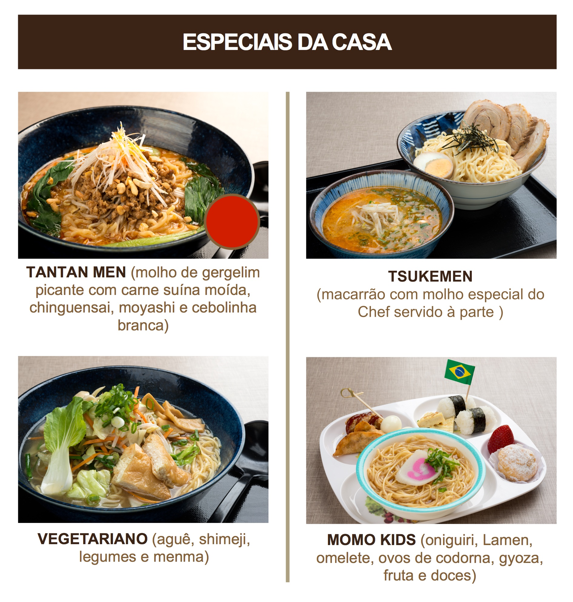

Macarrão fino específico para Ramen
Produzido com farinha de trigo, tapioca, ovos e corante
Macarrão grosso específico para Ramen
Produzido com farinha de trigo, tapioca, ovos e corante

Macarrão produzido a base de farinha de trigo e polvilho doce
Caldo a base de peixe, shoyu e alga konbu

A disponibilidade e a composição de todos os pratos do nosso cardápio poderão sofrer variações conforme o fornecimento dos ingredientes utilizados. Imagens meramente ilustrativas
Para mais informações consulte os nossos atendentes na loja